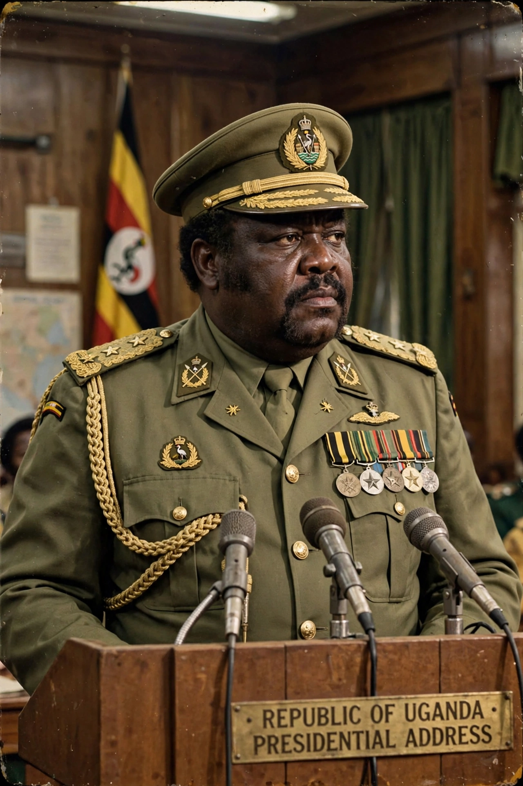

| In office | 25 January 1971 – 11 April 1979 (President of Uganda) |
|---|---|
| Born | c. 1925, Koboko or Kampala, Uganda Protectorate |
| Died | 16 August 2003 (aged c. 78), Jeddah, Saudi Arabia |
| Predecessor | Milton Obote |
| Successor | Yusuf Lule |
| Military service | King's African Rifles; Uganda Army (commander) |
Idi Amin Dada Oumee (c. 1925 – 16 August 2003) was a Ugandan military officer and politician who served as the third president of Uganda from 1971 to 1979. He ruled as a military dictator and is considered one of the most brutal despots in modern world history.
Amin joined the British colonial army, the King's African Rifles, in 1946. He rose rapidly after Ugandan independence in 1962, becoming commander of the army under President Milton Obote. On 25 January 1971, while Obote was abroad, Amin seized power in a coup, initially welcomed by many Ugandans and by Western governments.
Amin's regime was characterised by gross human rights abuses, political repression, ethnic persecution, extrajudicial killings and economic collapse. Estimates of the number killed range from 100,000 to 500,000. In 1972 he expelled Uganda's Asian minority — some 50,000–80,000 people, many of them citizens central to the economy — giving them 90 days to leave in an "economic war" that wrecked the country's commerce.
Amin cultivated a flamboyant public image and grandiose titles, styling himself "His Excellency, President for Life, Field Marshal Al Hadji Doctor Idi Amin Dada, VC, DSO, MC, CBE, Lord of All the Beasts of the Earth and Fishes of the Seas and Conqueror of the British Empire in Africa in General and Uganda in Particular". In 1976 he allowed an Air France airliner hijacked by Palestinian and German militants to land at Entebbe, where Israeli commandos rescued most of the hostages in Operation Entebbe, humiliating his regime.
In 1978 Amin's forces invaded Tanzania's Kagera region. Tanzania counter-invaded with Ugandan exiles of the Uganda National Liberation Front; Kampala fell on 11 April 1979, and Amin fled — first to Libya, then Iraq, and finally Saudi Arabia, where he lived in Jeddah until his death from kidney failure in 2003. He was never prosecuted for his crimes.
Amin remains a byword for dictatorial brutality, though a minority of Ugandans remember aspects of his rule — assertive nationalism and infrastructure spending — more favourably. His life inspired the novel and film The Last King of Scotland (2006), in which Forest Whitaker won an Academy Award for portraying him.
See also: Hostage · Uganda · Operation Entebbe · Milton Obote